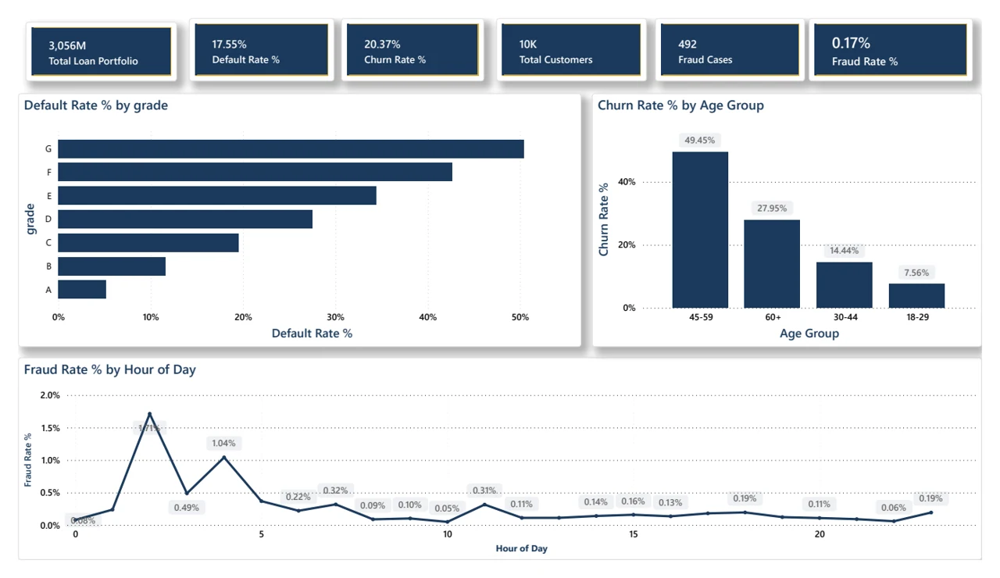

Computer vision · IoT
SafeRail Vision
A railway safety prototype that combines camera, radar, and ultrasonic sensing to flag track hazards. National Top 5 finalist at SAP Code Unnati.
Project codeHi, I’m
AI Engineering & Data Analytics
I build AI features people use and turn business data into dashboards that answer practical questions.
6Selected projects
Top 5SAP Code Unnati national finalist
2Professional certifications
Selected work
Computer vision · IoT
A railway safety prototype that combines camera, radar, and ultrasonic sensing to flag track hazards. National Top 5 finalist at SAP Code Unnati.
Project code
Retail analytics · Business intelligence
Explored 3,900+ transactions to understand customer spending. SQL queries compare subscribers and other shoppers, and a Power BI dashboard breaks down buying patterns.
Analysis & dashboard
Banking analytics · Machine learning
Analyzed 490K+ banking records to study credit risk, churn, and fraud. A Random Forest model supports risk prediction, alongside Power BI reporting.
Analysis & reports
Sports analytics · Business intelligence
Modeled IPL data in Power Query and wrote DAX measures to follow team standings, player performance, and Orange Cap and Purple Cap winners by season.
Dashboard & dataAbout me
I’m a Computer Science graduate based in Hyderabad. In analytics, I like starting with a question, tracing it back to the data, and giving someone a clear way to explore the answer.
At Hasman Software Solution, I bring that same habit to AI engineering. I work on voice and document tools for Botsplanet, measure how well retrieval works, and track what each model call costs.
Toolkit
OpenAI APIs & Agents SDK, RAG, embeddings, vector search, tool calling, FastAPI
Power BI, DAX, Power Query, Tableau, SAP Analytics Cloud, Excel
Python, Pandas, NumPy, Scikit-learn, PostgreSQL, data cleaning and validation
Databricks Delta tables, MongoDB Atlas, AWS S3, Node.js, React, Git, pytest
Experience
Oct 2026 – Present
Hasman Software Solution Pvt. Ltd. · Botsplanet
Jan 2026 – Jul 2026
Cyber Success Technologies · Pune
Recognition
SAP Code Unnati Innovation Marathon · SafeRail Vision
SAP Analytics Cloud · March 2026
Google via Coursera · March 2026
Led community service activities and student engagement events.
Contact
Have an opportunity in AI engineering or data analytics?
Reach out by email or find me on LinkedIn.